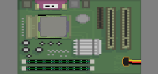

La Fuente de Poder
La fuente de poder es el componente que le da vida a la computadora. Toma la energía del enchufe y la transforma en el voltaje que necesita la placa madre y los componentes.
Haz clic en cualquier parte para empezar
La fuente de poder es el componente que le da vida a la computadora. Toma la energía del enchufe y la transforma en el voltaje que necesita la placa madre y los componentes.
Haz clic en cualquier parte para empezar


